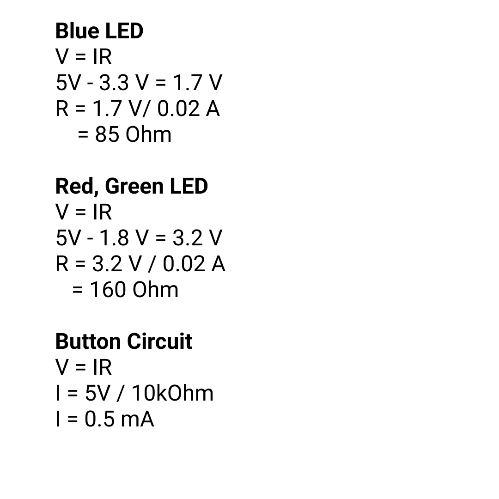

Michelle's Assignment 2!
This is what my circuit and schematic looked like for this assignment. I wanted to create a sequence of LEDs going from Red, fading to Blue, going back to Magenta, and then adding some green at the ends.
These are the calculations for everything. I used a 220 Ohm resistors to stay consistent and used a 10k Ohm resistor for the button to allow it to have the little amperes required for it to be used.

The arduino code is below:
const int button = 2; //push button input
const int green_LED = 7; //green LED
const int R = 12; //red for the RBG LED
const int G = 11; //green for the RBG LED
const int B = 10; //blue for the RBG LED
const int red_LED = 9; //red LED
const int blue_LED = 13; // blue lED
const int fadingDelay = 30; //delay in microseconds
int buttonState = 0; // initial state of button
void setup() {
//initializing all of the LEDs and push button
pinMode(green_LED, OUTPUT);
pinMode(red_LED, OUTPUT);
pinMode(blue_LED, OUTPUT);
pinMode(R, OUTPUT);
pinMode(G, OUTPUT);
pinMode(B, OUTPUT);
pinMode(button, INPUT);
}
void loop() {
buttonState = digitalRead(button); //read the button state and store it in buttonState
if (buttonState == HIGH) { //if buttonState is HIGH, which happens when it is pressed
for (int i = 0; i <= 255; i+= 5) { // for loop from 0 to 255 and incrementing 5 to increase RED LED brightness
analogWrite(red_LED, i); //set the red LED to i
delay(fadingDelay); //delay amount
}
for (int i = 0; i <= 255; i += 5) { //for loop from 0 to 255 and increment 5 to vary the RGB LED from red-ish to blue
analogWrite(R, 255 - i); //Red starts off at 255 and decreases 5 every iteration
analogWrite(B, i); //Blue starts at 0, and increases 5 every iteration
delay(fadingDelay); // delay amount
}
for (int i = 0; i <= 255; i+= 5) { //for loop from 0 to 255 to increase BLUE LED brightness
analogWrite(blue_LED, i); //set the blue LED to i
delay(fadingDelay); //delay amount
}
for (int i = 255; i >= 0; i -= 5) { //for loop from 0 to 255 to vary the RGB LED frin white to magenta
analogWrite(R, 255); //R LED is constant at 255
analogWrite(G, i); //Green LED starts at i and increments 5
analogWrite(B, 255); // B LED is constant at 255
delay(fadingDelay); //delay amount
}
digitalWrite(green_LED, HIGH); //turn Green LEDs on after all for loops have looped
}
}
This is the final product! The colors are a little hard to see on camera :/